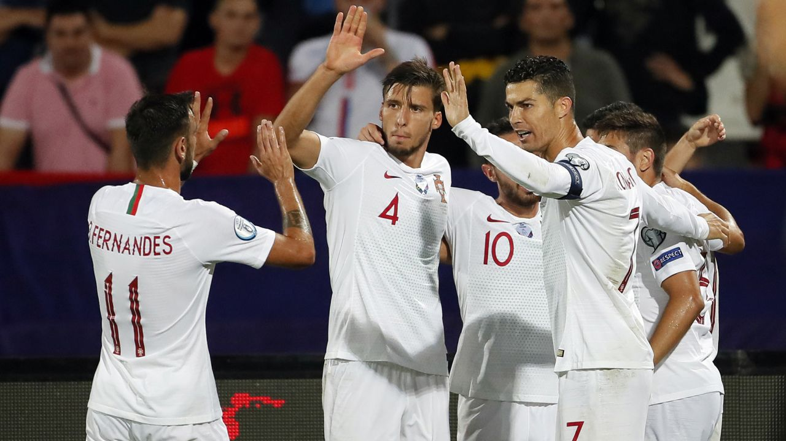

‘Football is everything’: How Portugal and
Manchester City star Rúben Dias forged
his winning mentality
CNN - Before anyone else has arrived, Ruben Dias is at Manchester City’s training ground, ready to begin his day. 
“The problem is, I go in the building and, when I come out, it’s dark already,” he jokes to CNN Sport, while driving through Manchester to join up with his team.
It is through this dedication to football, alongside his natural talent, that Dias has forged his reputation as one of the game’s best defenders, winning the Premier League twice with Manchester City and now featuring at the 2022 World Cup with Portugal.
“It will definitely be a special moment,” he says, looking ahead to the tournament.
“I had the chance of being in the 2018 World Cup in Russia. And I definitely felt a different perspective because it’s one thing to watch it from the outside, you know how big it is, but then to actually live it and be there, it’s just something else.
“As a player, it’s probably the biggest [trophy] you can achieve. It’s unfair to put it into words, to be honest, the feeling you must have after you’ve done it.”
Dias was included in Portugal’s 2018 squad but the then 21-year-old picked up an injury and didn’t feature in any matches.
This time around, he will be a key player for the Seleção as it navigates a group containing Ghana, Uruguay and South Korea, aiming to mark what is likely to be the last World Cup for its ‘golden generation’ with a flourish.
Pepe is 39, João Moutinho is 36, and, of course, Portugal’s talisman Cristiano Ronaldo is 37 with his powers waning and a troubled club career following his departure from Manchester United.
“The first day I met [Ronaldo], actually trained with him, he had just won the Champions League,” Dias recalls.
“I still remember that day and we were practicing in normal practice. And then you just see why he was where he was. You know, the way he did everything, every single thing, the detail, the dedication.”
‘It’s all up to what’s deep inside you’
Dias channels a similar spirit. His friend and teammate at City and Portugal, Bernardo Silva, tells CNN Sport that “he is like 100% football,” always working for the team and trying to help his teammates.
“Football for me is everything,” Dias says. “It’s life. It’s happiness. It’s dealing with everything from being wonderful to being the worst thing in the world, dealing with all kinds of emotions.
“It’s preparing my future, it’s preparing one day to have a family. It’s becoming a better man myself. Like many other professions as well but for me, football is a big example of life because you have it all in football.”
Despite only being 25 years old, Dias is already a building a legacy at the Etihad Stadium, proving to be a key member of Manchester City’s all-conquering squad.
After his first season with the club in 2020/21, he won multiple individual awards – Premier League Player of the Season, Football Writer’s Player of the Year and Etihad Player of the Season – and was hailed as part of City’s leadership group.
“In the end, I think it’s all up to what’s deep inside you, what’s deep inside your head, your subconscious, the things you do just because it’s those other things you feel like doing,” he says.
But family, as well as football, is everything for Dias, he says, later trying to replicate his mum’s recipe of arroz de pato – a Portuguese dish of duck rice – with his brother.
“You can have all the success in the world alone,” he adds. “But if you have no one to share it with, what does it serve?”